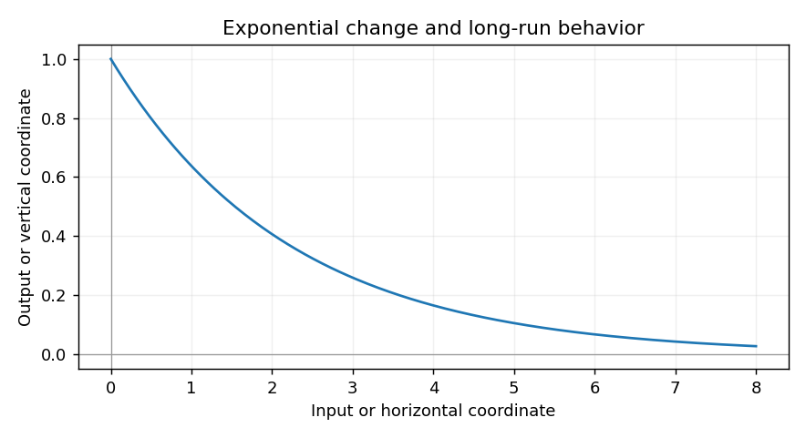
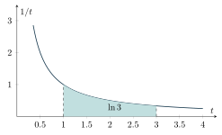
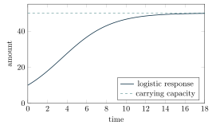
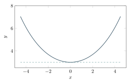

Integrals and Transcendental Functions
Guiding question. How can an integral define a new function, and how can that function explain growth, decay, and curved geometric relationships? This chapter builds logarithms from accumulated area, connects exponential functions to differential equations, and introduces hyperbolic functions through the same mathematical ideas.
Learning outcomes. By the end of the chapter students should be able to (i) define and differentiate the natural logarithm; (ii) integrate logarithmic and exponential expressions; (iii) solve separable differential equations and interpret initial conditions; (iv) derive and use exponential growth, decay, and Newton cooling models; (v) differentiate and integrate hyperbolic functions; and (vi) verify analytical results numerically in R and Python.
Prerequisites. Chain rule, inverse functions, the Fundamental Theorem of Calculus, and substitution.
Visual concept investigation
Interpreting exponential parameters
In \(y(t)=y_0e^{kt}\), the parameter \(k\) has units of inverse time. Positive \(k\) models growth; negative \(k\) models decay. A fitted exponential curve may describe observed behavior over a limited interval without remaining realistic indefinitely. Always distinguish a mathematical solution from an empirically justified forecast.

Guided investigation. For \(y(t)=20e^{-0.4t}\), compute the initial value and half-life. Explain why the derivative is proportional to the current amount.
Interactive investigation: Exponential change
The natural logarithm and exponential integrals
Constructing a logarithm from area
For \(x>0\), the reciprocal function \(1/x\) is positive and continuous. We may therefore define a function by accumulating its area from \(1\) to \(x\).
Definition — Natural logarithm. For \(x>0\), define \[\boxed{\ln x=\int_1^x\frac{1}{t}\,dt.}\] When \(0<x<1\), the integral is negative because the limits of integration are reversed.

Theorem — Derivative of the logarithm. For every \(x>0\), \(\displaystyle \frac{d}{dx}\ln x=\frac1x\).
Proof. Apply Part I of the Fundamental Theorem of Calculus to Definition [def:ln]. Since \(1/t\) is continuous for \(t>0\), differentiating the accumulated-area function returns its integrand at \(t=x\).
Theorem — Monotonicity and concavity of the logarithm. The function \(\ln x\) is strictly increasing and concave down on \((0,\infty)\).
Proof. The first derivative \(1/x\) is positive. The second derivative \(-1/x^2\) is negative.
Example — Estimating a logarithm without a calculator. Show that \(1/2<\ln 2<1\).
Solution. On \([1,2]\), the graph \(1/t\) lies between the horizontal lines \(1/2\) and \(1\). Integrating gives \(\int_1^2\frac12\,dt<\int_1^2\frac1t\,dt<\int_1^2 1\,dt\), proving the claim.
Theorem — Logarithm laws. For positive \(a,b\) and real \(r\), \[\ln(ab)=\ln a+\ln b,\qquad\ln(a/b)=\ln a-\ln b,\qquad\ln(a^r)=r\ln a.\]
Proof. Fix \(a>0\) and let \(F(x)=\ln(ax)-\ln x\) for \(x>0\). Then \(F'(x)=a/(ax)-1/x=0\), so \(F\) is constant. At \(x=1\), \(F(1)=\ln a\). Hence \(\ln(ax)=\ln a+\ln x\). The quotient law follows by taking \(b^{-1}\), and the power law follows by differentiating \(\ln(x^r)-r\ln x\) and evaluating at \(x=1\).
Remark. The law \(\ln(a+b)=\ln a+\ln b\) is false. Logarithms convert products, not sums, into sums.
General logarithmic derivatives
Theorem — Logarithmic chain rule. If \(u\) is differentiable and \(u(x)\ne0\), then \[\boxed{\frac{d}{dx}\ln|u(x)|=\frac{u'(x)}{u(x)}.}\]
Proof. On any interval where \(u>0\), apply the chain rule to \(\ln u\). Where \(u<0\), write \(\ln|u|=\ln(-u)\) and differentiate.
Example — Recognizing a logarithmic integral. Evaluate \(\int\frac{6x}{3x^2+5}\,dx\).
Solution. The denominator has derivative \(6x\). Set \(u=3x^2+5\), \(du=6x\,dx\). Then the integral is \(\ln|u|+C=\ln(3x^2+5)+C\). Here the absolute value may be omitted because \(3x^2+5>0\).
Example — An integral with a restricted domain. Find \(\int\frac{2x+1}{x^2+x-6}\,dx\) and identify where the result is valid.
Solution. Since \((x^2+x-6)'=2x+1\), the antiderivative is \(\ln|x^2+x-6|+C\). The integrand is undefined at \(x=-3\) and \(x=2\), so the constant of integration may differ on the three separate intervals.
Defining the exponential function
Since \(\ln x\) is continuous, strictly increasing, and has range \(\mathbb R\), it has an inverse.
Definition — Natural exponential. The function \(e^x\) is the inverse of \(\ln x\). Thus \(\ln(e^x)=x\) for all real \(x\) and \(e^{\ln x}=x\) for \(x>0\).
Theorem — Derivative of the natural exponential. For all real \(x\), \(\displaystyle\frac{d}{dx}e^x=e^x\).
Proof. Let \(y=e^x\), so \(x=\ln y\). Implicit differentiation gives \(1=(1/y)y'\), hence \(y'=y=e^x\).
Theorem — Exponential chain rule. For differentiable \(u\), \(\displaystyle\frac{d}{dx}e^{u(x)}=e^{u(x)}u'(x)\).
Theorem — Exponential antiderivative. For differentiable \(u\), \(\displaystyle\int e^{u(x)}u'(x)\,dx=e^{u(x)}+C\).
Example — Exponential substitution. Evaluate \(\int_0^2 3xe^{\frac32x^2}\,dx\).
Solution. Set \(u=\frac32x^2\) so \(du=3x\,dx\). The bounds become \(0\) and \(6\). Therefore \(\int_0^6e^u\,du=e^6-1\). Differentiation of \(e^{3x^2/2}\) confirms the antiderivative.
Theorem — General base. For \(a>0\), \(a\ne1\), define \(a^x=e^{x\ln a}\). Then \[\frac{d}{dx}a^x=a^x\ln a,\qquad\int a^x\,dx=\frac{a^x}{\ln a}+C.\]
Example — An exponential integral with units. A sensor’s background-corrected signal is \(S(t)=12(0.8)^t\) units/hour. Compute its total signal from \(t=0\) to \(t=5\) hours.
Solution. The accumulation is \(\int_0^5 12(0.8)^t\,dt=12[(0.8)^t/\ln(0.8)]_0^5=12((0.8)^5-1)/\ln(0.8)\) signal units. Both numerator and denominator are negative, so the result is positive.
Logarithmic differentiation and inverse trigonometric review
Products, quotients, and variable exponents sometimes simplify after taking logarithms.
Example — A variable exponent. Differentiate \(y=x^{\sqrt{x}}\) for \(x>0\).
Solution. Take logs: \(\ln y=\sqrt{x}\ln x\). Differentiate: \(y'/y=(\ln x)/(2\sqrt{x})+1/\sqrt{x}\). Thus \[\boxed{y'=x^{\sqrt{x}}\left(\frac{\ln x+2}{2\sqrt{x}}\right).}\] The restriction \(x>0\) is essential to the real-valued logarithmic method.
Remark. Recall that \(\int\frac{1}{1+x^2}\,dx=\arctan x+C\) and \(\int\frac{1}{\sqrt{1-x^2}}\,dx=\arcsin x+C\). These formulas complement logarithmic and exponential antiderivatives; they are not consequences of the logarithm laws.
Exponential change and separable differential equations
From proportional change to an equation
A quantity may grow at a rate proportional to its current amount. The proportionality constant encodes the speed and direction of change.
Definition — Exponential change model. A differentiable quantity \(Q(t)\) follows exponential change if \(Q'(t)=kQ(t)\) for a constant \(k\). The initial value \(Q(0)=Q_0\) specifies the particular model.
Theorem — Solution of exponential change. If \(Q'=kQ\) and \(Q(0)=Q_0\), then \(Q(t)=Q_0e^{kt}\).
Proof. The proposed function satisfies \(Q'=kQ_0e^{kt}=kQ\) and \(Q(0)=Q_0\). For nonzero solutions, separation gives \(dQ/Q=k\,dt\) and \(\ln|Q|=kt+C\), yielding the same family. The zero solution corresponds to \(Q_0=0\).
Example — Estimating a decay constant. A medication amount decreases from \(120\) mg to \(72\) mg over \(4\) hours under exponential decay. Determine the model and its half-life.
Solution. Write \(Q(t)=120e^{kt}\). Then \(72=120e^{4k}\), so \(k=\frac14\ln(0.6)\approx-0.127706\) per hour. The half-life satisfies \(1/2=e^{kt_{1/2}}\), hence \(t_{1/2}=\ln(1/2)/k\approx5.43\) hours. The negative sign of \(k\) confirms decay.
Theorem — Doubling time and half-life. For \(Q(t)=Q_0e^{kt}\), the doubling time for \(k>0\) is \(\ln 2/k\) and the half-life for \(k<0\) is \(\ln(1/2)/k\).
Proof. Divide \(Q(t+T)\) by \(Q(t)\) to obtain \(e^{kT}\). Set the ratio equal to \(2\) or \(1/2\) and solve.
Separation of variables
Definition — Separable differential equation. An equation of the form \(y'=g(t)h(y)\) is separable when its variables can be rearranged as \(dy/h(y)=g(t)\,dt\) wherever \(h(y)\ne0\).
Remark. Dividing by \(h(y)\) may discard equilibrium solutions satisfying \(h(y)=0\). Check these solutions before dividing.
Example — A nonlinear saturation model. Solve \(y'=0.4y(1-y/50)\) with \(y(0)=10\).
Solution. For \(y\ne0,50\), separation yields \[\int\frac{dy}{y(1-y/50)}=\int0.4\,dt.\] Since \(1/[y(1-y/50)]=1/y+1/(50-y)\), integration gives \(\ln|y|-\ln|50-y|=0.4t+C\). Hence \(y/(50-y)=Ae^{0.4t}\) and \[y(t)=\frac{50}{1+Be^{-0.4t}}.\] Using \(y(0)=10\) gives \(B=4\). The solution increases toward \(50\) without exceeding it. The equilibrium solutions \(y\equiv0\) and \(y\equiv50\) should be checked separately.

Newton’s law of cooling
A common model assumes that temperature changes at a rate proportional to its difference from the surrounding temperature \(T_a\).
Theorem — Cooling model. If \(T_a\) is constant and \(T'=-k(T-T_a)\) for \(k>0\), then \[\boxed{T(t)=T_a+(T_0-T_a)e^{-kt}.}\]
Proof. Let \(U=T-T_a\). Since \(T_a\) is constant, \(U'=-kU\), so \(U=(T_0-T_a)e^{-kt}\).
Example — When does a sample reach a threshold?. A sample cools from \(82^\circ\)C in a room at \(22^\circ\)C with \(k=0.12\) per minute. When will it reach \(40^\circ\)C?
Solution. The model is \(T(t)=22+60e^{-0.12t}\). Set \(40=22+60e^{-0.12t}\), giving \(e^{-0.12t}=0.3\) and \(t=-\ln(0.3)/0.12\approx10.03\) minutes. The temperature remains above room temperature for every finite time.
Model limitations and interpretation
Exponential change assumes a constant proportional rate; logistic growth assumes a stable carrying capacity; and the cooling model assumes a constant ambient temperature and a single effective cooling coefficient. Data can challenge these assumptions. A numerical fit does not establish causation, and extrapolating beyond observed times can be unreliable.
Hyperbolic functions
Definitions and identities
Definition — Hyperbolic sine and cosine. For real \(x\), \[\boxed{\sinh x=\frac{e^x-e^{-x}}2,\qquad\cosh x=\frac{e^x+e^{-x}}2.}\] Define \(\tanh x=\sinh x/\cosh x\). The names reflect a connection with the unit hyperbola, not the unit circle.
Theorem — Fundamental hyperbolic identity. For every real \(x\), \(\cosh^2x-\sinh^2x=1\).
Proof. Subtract the squares of the defining exponential expressions: \([(e^x+e^{-x})^2-(e^x-e^{-x})^2]/4=1\).
Theorem — Derivatives of hyperbolic functions. \[\frac{d}{dx}\sinh x=\cosh x,\qquad \frac{d}{dx}\cosh x=\sinh x,\qquad\frac{d}{dx}\tanh x=\operatorname{sech}^2x.\]
Proof. Differentiate the exponential definitions. For \(\tanh x\), use the quotient rule and \(\cosh^2x-\sinh^2x=1\).
Theorem — Basic hyperbolic antiderivatives. \[\int\cosh x\,dx=\sinh x+C,\qquad\int\sinh x\,dx=\cosh x+C,\qquad\int\operatorname{sech}^2x\,dx=\tanh x+C.\]
Example — A hyperbolic integral. Evaluate \(\int_0^1 2\cosh(2x)\,dx\).
Solution. With \(u=2x\), \(du=2\,dx\), so the integral is \([\sinh(2x)]_0^1=\sinh2\).
Inverse hyperbolic functions
The function \(\sinh x\) is strictly increasing on \(\mathbb R\) and has an inverse. The function \(\cosh x\) is one-to-one only after restricting its domain, conventionally to \(x\ge0\).
Theorem — Inverse hyperbolic sine. For every real \(x\), \[\boxed{\operatorname{arsinh}x=\ln\left(x+\sqrt{x^2+1}\right),\qquad\frac{d}{dx}\operatorname{arsinh}x=\frac1{\sqrt{x^2+1}}.}\]
Proof. Let \(x=\sinh y=(e^y-e^{-y})/2\) and put \(z=e^y>0\). Then \(z^2-2xz-1=0\), so \(z=x+\sqrt{x^2+1}\); the other root is negative. Taking logs gives the inverse formula. Differentiate it to obtain the derivative.
Theorem — Inverse hyperbolic cosine. For \(x>1\), \(\displaystyle\frac{d}{dx}\operatorname{arcosh}x=\frac1{\sqrt{x^2-1}}\), with \(\operatorname{arcosh}x=\ln(x+\sqrt{x^2-1})\) for \(x\ge1\).
Example — An inverse hyperbolic antiderivative. Evaluate \(\int\frac{dx}{\sqrt{x^2+9}}\).
Solution. Set \(u=x/3\), so \(dx=3\,du\) and \(\sqrt{x^2+9}=3\sqrt{u^2+1}\). The result is \(\operatorname{arsinh}(x/3)+C\). Equivalently it is \(\ln(x+\sqrt{x^2+9})+C\); the two forms differ by a constant.
Why hyperbolic functions matter: a hanging cable
A flexible uniform cable hanging under its own weight takes a catenary shape. With a suitable choice of origin, its height may be written \(y=a\cosh(x/a)\), where \(a>0\) controls the scale.
Example — Slope and length of a catenary. For \(y=3\cosh(x/3)\) on \(-3\le x\le3\), determine the slopes at the endpoints and the cable length.
Solution. Differentiation gives \(y'=\sinh(x/3)\), so the endpoint slopes are \(\pm\sinh1\). The arc length is \[L=\int_{-3}^{3}\sqrt{1+\sinh^2(x/3)}\,dx=\int_{-3}^{3}\cosh(x/3)\,dx=6\sinh1,\] using \(1+\sinh^2u=\cosh^2u\) and \(\cosh u>0\).

Synthesis: choosing a mathematical strategy
Before computing, identify whether the task concerns accumulated reciprocal change, exponential growth or decay, separation of variables, or a hyperbolic identity. Then write down the domain, relevant units, and initial condition. After solving, differentiate your answer to verify it. Computational checks are valuable, but they complement rather than replace the reasoning.
Example — Connecting three ideas. Let \(Q(t)=40e^{-0.2t}\). Compute (a) \(Q'(t)\), (b) \(\int_0^5Q(t)\,dt\), and (c) the time at which \(Q(t)=10\).
Solution. (a) \(Q'=-8e^{-0.2t}=-0.2Q\). (b) The accumulation is \([-200e^{-0.2t}]_0^5=200(1-e^{-1})\). (c) \(10=40e^{-0.2t}\) implies \(t=\ln4/0.2=5\ln4\). The three answers describe rate, total, and threshold time, respectively.
R computational laboratories
These laboratories appear together before the Python laboratories. Each script is self-contained and uses base R. Run the code, inspect the plot or numerical output, and explain how it connects to the preceding mathematical derivation.
R Laboratory 1: logarithm as area
f <- function(t) 1/t
for (x in c(0.5, 1, 2, 4)) {
numerical <- integrate(f, lower=1, upper=x)$value
cat('x =', x, 'area =', round(numerical, 7),
'log(x) =', round(log(x), 7), '\n')
}
curve(1/x, from=0.25, to=4, lwd=2,
xlab='t', ylab='1/t', main='Reciprocal curve')Investigate. Explain why the integral is negative for \(x=0.5\). Compare the numerical and exact values and describe why the computation does not prove the identity.
R Laboratory 2: exponential accumulation
f <- function(t) 12 * 0.8^t
numeric_total <- integrate(f, 0, 5)$value
exact_total <- 12 * (0.8^5 - 1)/log(0.8)
cat('Numerical =', numeric_total, '\n')
cat('Analytical =', exact_total, '\n')
curve(f(x), from=0, to=5, lwd=2,
xlab='Time (hours)', ylab='Signal per hour')Investigate. Explain why the total has units of signal, not signal per hour.
R Laboratory 3: half-life and parameter sensitivity
Q0 <- 120
k <- log(0.6)/4
t <- seq(0, 16, length.out=250)
plot(t, Q0*exp(k*t), type='l', lwd=2,
xlab='Hours', ylab='Amount (mg)')
abline(h=Q0/2, lty=2)
cat('Decay constant:', k, '\n')
cat('Half-life:', log(0.5)/k, '\n')Investigate. Repeat with \(k\) multiplied by \(1.2\). What happens to half-life?
R Laboratory 4: logistic saturation
t <- seq(0, 20, length.out=300)
y <- 50/(1 + 4*exp(-0.4*t))
plot(t, y, type='l', lwd=2,
xlab='Time', ylab='Population')
abline(h=50, lty=2)
cat('At t=10:', 50/(1 + 4*exp(-4)), '\n')Investigate. Compare \(y'(t)=0.4y(1-y/50)\) at early and late times.
R Laboratory 5: cooling threshold
Tfun <- function(t) 22 + 60*exp(-0.12*t)
threshold_time <- -log(0.3)/0.12
cat('Threshold time:', threshold_time, '\n')
cat('Temperature check:', Tfun(threshold_time), '\n')
curve(Tfun(x), from=0, to=30, lwd=2,
xlab='Minutes', ylab='Temperature (C)')
abline(h=c(22, 40), lty=2)Investigate. What assumption about ambient temperature is encoded in the model?
R Laboratory 6: hyperbolic geometry
a <- 3
x <- seq(-4, 4, length.out=250)
y <- a*cosh(x/a)
plot(x, y, type='l', lwd=2,
xlab='x', ylab='Cable height')
length_num <- integrate(function(x) cosh(x/a), -3, 3)$value
length_exact <- 6*sinh(1)
cat('Numerical length:', length_num, '\n')
cat('Exact length:', length_exact, '\n')Investigate. Verify \(\cosh^2u-\sinh^2u=1\) numerically on a grid. Does that constitute a proof?
Python computational laboratories
The Python activities mirror the mathematical goals of the R laboratories but are presented independently. They require NumPy, SciPy, and Matplotlib.
Python Laboratory 1: logarithm as area
import numpy as np
from scipy.integrate import quad
import matplotlib.pyplot as plt
for x in [0.5, 1, 2, 4]:
numerical = quad(lambda t: 1/t, 1, x)[0]
print(x, round(numerical, 7), round(np.log(x), 7))
t = np.linspace(0.25, 4, 300)
plt.plot(t, 1/t)
plt.xlabel('t'); plt.ylabel('1/t')
plt.show()Investigate. Compare the signs and values with the R output.
Python Laboratory 2: exponential accumulation
import numpy as np
from scipy.integrate import quad
import matplotlib.pyplot as plt
f = lambda t: 12 * 0.8**t
numerical = quad(f, 0, 5)[0]
exact = 12 * (0.8**5 - 1)/np.log(0.8)
print('Numerical:', numerical, 'Analytical:', exact)
t = np.linspace(0, 5, 200)
plt.plot(t, f(t))
plt.xlabel('Time (hours)'); plt.ylabel('Signal per hour')
plt.show()Investigate. Explain the meaning of the shaded area you would draw under the curve.
Python Laboratory 3: half-life
import numpy as np
import matplotlib.pyplot as plt
Q0 = 120
k = np.log(0.6)/4
t = np.linspace(0, 16, 250)
plt.plot(t, Q0*np.exp(k*t))
plt.axhline(Q0/2, linestyle='--')
plt.xlabel('Hours'); plt.ylabel('Amount (mg)')
plt.show()
print('k:', k, 'half-life:', np.log(0.5)/k)Investigate. Confirm that the half-life does not depend on \(Q_0\).
Python Laboratory 4: logistic saturation
import numpy as np
import matplotlib.pyplot as plt
t = np.linspace(0, 20, 300)
y = 50/(1 + 4*np.exp(-0.4*t))
plt.plot(t, y)
plt.axhline(50, linestyle='--')
plt.xlabel('Time'); plt.ylabel('Population')
plt.show()
print('At t=10:', 50/(1 + 4*np.exp(-4)))Investigate. Find the time when the model reaches half its carrying capacity.
Python Laboratory 5: cooling threshold
import numpy as np
import matplotlib.pyplot as plt
T = lambda t: 22 + 60*np.exp(-0.12*t)
t_star = -np.log(0.3)/0.12
print('Threshold time:', t_star)
print('Check:', T(t_star))
t = np.linspace(0, 30, 300)
plt.plot(t, T(t))
plt.axhline(40, linestyle='--')
plt.axhline(22, linestyle=':')
plt.xlabel('Minutes'); plt.ylabel('Temperature (C)')
plt.show()Investigate. Predict what happens if the initial temperature increases by \(10^\circ\)C.
Python Laboratory 6: hyperbolic geometry
import numpy as np
from scipy.integrate import quad
import matplotlib.pyplot as plt
a = 3
x = np.linspace(-4, 4, 250)
plt.plot(x, a*np.cosh(x/a))
plt.xlabel('x'); plt.ylabel('Cable height')
plt.show()
length_num = quad(lambda x: np.cosh(x/a), -3, 3)[0]
length_exact = 6*np.sinh(1)
print('Numerical:', length_num, 'Exact:', length_exact)Investigate. Why does the arc-length integrand simplify to \(\cosh(x/a)\)?
Chapter exercises
Instructions. Show mathematical reasoning before using software. Give domains, units, and interpretation when appropriate. Problems marked \(\star\) require extended justification.
Foundations and logarithmic integrals
Use the area definition to explain why \(\ln 1=0\).
Explain geometrically why \(\ln x\) is negative for \(0<x<1\).
Prove that \(\ln x\) is increasing using a derivative argument.
Show that \(\ln 4=2\ln2\) using logarithm laws.
Explain why \(\ln(-2)\) is not defined as a real number.
Differentiate \(\ln(5x^2+1)\).
Differentiate \(\ln|x^3-8|\) and state the domain.
Evaluate \(\int\frac{4x^3}{x^4+7}\,dx\).
Evaluate \(\int_1^3\frac{2x}{x^2+1}\,dx\).
Evaluate \(\int\frac{dx}{7x-2}\).
Explain the difference between \(\ln(x^2)\) and \((\ln x)^2\).
\(\star\) Prove the product law for logarithms by differentiating a suitable function.
Differentiate \(e^{2x^2-x}\).
Evaluate \(\int_0^1 2xe^{x^2}\,dx\).
Evaluate \(\int 5^{3x}\,dx\).
Differentiate \(y=x^{2x}\) for \(x>0\) using logarithmic differentiation.
Evaluate \(\int_0^4 9(0.7)^t\,dt\) and state its units if the integrand is measured in liters/hour.
\(\star\) Compare \(\ln(1+x)\) and \(x\) for \(x>0\) using derivatives.
Differential equations and models
Verify by differentiation that \(Q=7e^{0.3t}\) solves \(Q'=0.3Q\).
Solve \(y'=5y\) with \(y(0)=2\).
Solve \(y'=-0.4y\) with \(y(3)=10\).
Find the doubling time for a model with \(k=0.08\) per day.
Find the half-life for a model with \(k=-0.15\) per hour.
A population doubles in 6 years. Determine its exponential growth constant.
A pollutant decreases by 30% over 5 days. Determine its exponential decay constant.
Explain why an exponential decay model cannot reach zero at a finite time.
Solve \(y'=ty\) with \(y(0)=3\).
Solve \(y'=2t(1+y^2)\) with \(y(0)=0\) on its maximal interval around \(0\).
Find all equilibrium solutions of \(y'=y(4-y)\).
Solve \(y'=0.2y(1-y/100)\) with \(y(0)=20\).
Determine when the logistic model in Exercise 30 reaches \(80\).
A liquid cools from \(90^\circ\)C toward \(20^\circ\)C with \(k=0.09\) min\(^{-1}\). Find its temperature after 12 minutes.
Find the time at which the liquid in Exercise 32 reaches \(35^\circ\)C.
\(\star\) Explain why a changing room temperature violates the assumptions of the constant-ambient cooling formula.
Hyperbolic functions and synthesis
Prove from the definitions that \(\sinh(-x)=-\sinh x\).
Prove from the definitions that \(\cosh(-x)=\cosh x\).
Derive \(\cosh^2x-\sinh^2x=1\).
Differentiate \(\sinh(3x^2)\).
Differentiate \(\cosh(4x-1)\).
Evaluate \(\int_0^2\cosh(3x)\,dx\).
Evaluate \(\int\frac{dx}{\sqrt{x^2+16}}\).
Verify the formula for \(\operatorname{arsinh}x\) by differentiation.
Find the slope of \(y=5\cosh(x/5)\) at \(x=5\).
Find the arc length of \(y=2\cosh(x/2)\) for \(-2\le x\le2\).
\(\star\) Explain why a catenary is not generally a parabola, even though their graphs can look similar near the minimum.
Compare \(e^x\), \(\sinh x\), and \(\cosh x\) as \(x\to\infty\).
Design a numerical test for the identity \(\cosh^2x-\sinh^2x=1\). Discuss floating-point limitations.
\(\star\) Construct an original growth or cooling problem, derive a model, and specify how data could test its assumptions.
Conceptual review
How can an integral define a function rather than just a number?
What is the mathematical difference between an initial condition and a differential equation?
Why must equilibrium solutions be checked when separating variables?
How does a decay constant differ from a half-life?
Why do numerical agreement and graphical agreement not constitute a proof?
Which features of a cooling model are assumptions, and which are consequences?
How are hyperbolic identities different from trigonometric identities?
How can checking units reveal an incorrect integral or differential equation?
Chapter project: temperature recovery and model assessment
Scenario
A laboratory vessel contains a warm solution. Its temperature is recorded in a room maintained near \(21^\circ\)C. The following synthetic teaching dataset represents a plausible cooling trajectory with measurement variation; it is not experimental evidence.
| Time (min) | 0 | 4 | 8 | 12 | 16 | 20 | 24 |
|---|---|---|---|---|---|---|---|
| Temperature (\(^\circ\)C) | 78.0 | 64.1 | 53.9 | 45.5 | 39.7 | 35.4 | 31.9 |
Part A: analytical foundation (25 points)
Assume \(T'(t)=-k(T(t)-21)\), \(k>0\). Derive the solution using separation of variables, explain the role of the initial condition, and identify the units of \(k\). Derive an expression for the time at which the temperature reaches a specified threshold \(T_*\) between \(21\) and the initial temperature.
Part B: estimating the parameter (20 points)
Use the first and last measurements to obtain a preliminary estimate of \(k\). Then linearize the model by plotting \(\ln(T-21)\) against time and fit a straight line using all observations. Explain why the logarithm requires \(T>21\) and why transformed-scale fitting is not identical to minimizing errors on the original temperature scale.
Part C: R investigation (20 points)
In R, enter the data, fit the linearized model, calculate predicted temperatures and residuals, and produce clearly labeled observed-versus-predicted and residual plots. Report the fitted \(k\), the estimated time to reach \(35^\circ\)C, and at least one quantitative error summary. Interpret rather than merely display each output.
Part D: Python replication (20 points)
Repeat Part C independently in Python with NumPy and Matplotlib. Compare the fitted parameter and predictions with R, accounting for rounding. Explain any meaningful discrepancy and verify your threshold calculation by substitution into the fitted temperature function.
Part E: critique and communication (15 points)
Write a short technical report explaining the mathematical model, numerical method, parameter estimate, residual pattern, and two reasons why predictions might fail outside the observed time range. Propose one improved data-collection strategy.
Project rubric
| Criterion | Points |
|---|---|
| Analytical derivation and interpretation | 25 |
| Parameter estimation and transformations | 20 |
| R analysis, figures, and explanations | 20 |
| Python replication and comparison | 20 |
| Critical assessment and written communication | 15 |
| Total | 100 |
Instructor note. Encourage students to distinguish a parameter estimated from two observations from one estimated using all observations. Reward transparent assumptions, reproducible code, and interpretation rather than excessive numerical precision.
Graphical synthesis and reflective practice

Reflection. State what the graph demonstrates, what it does not establish, and how you would verify the corresponding claim analytically. Identify the relevant units or mathematical assumptions before using a computer-generated result.